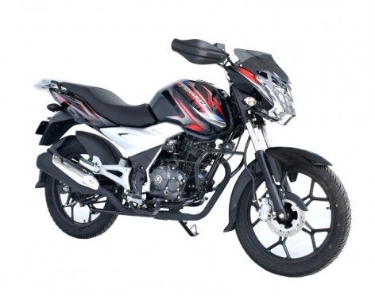

Moto suziki
En 2016 Suzuki fue el mayor fabricante de automóviles subcompactos a nivel mundial. Por segundo año consecutivo, fue la marca número uno en cuanto automóviles pequeños se refiere. En septiembre de 2017, las ventas globales de la marca superó l02,6 millones de unidades comercializadas desde que se adentró en la fabricación de automóviles en 1955
Moto honda
Uno de los puntos fuertes de Honda y su principal factor de diferenciación respecto a otras empresas automovilísticas es la investigación y desarrollo de tecnologías que permitan alcanzar la llamada movilidad sostenible, estrategia que comenzó hace ya más de 30 años. Hoy en día.
Moto akt
AKT actualmente importa motocicletas de distintos fabricantes chinos y taiwaneses bajo la modalidad CKD para favorecerse de los beneficios arancelarios que permite este modelo de importación, dentro de sus principales proveedores con sede en la China y Taiwán como Loncin Holdings, Qjiang motors y SYM Motors.
Moto viva R
motocicleta cómoda y económica que ofrece una variedad de detalles de alta calidad como freno de disco delantero, suspensión suave, encendido electrónico y mecánico. Es confortable al momento de conducir al tiempo que ofrece suavidad entre cambios de marcha y un bajo consumo de combustible.

Moto discover
La primera definición de descubrir en el diccionario es ser el primero en encontrar o descubrir. Otra definición de descubrir es aprender o encontrarse por primera vez; darse cuenta de. Descubrir también es encontrar después de estudiar o buscar.
Motocross
motocicletas en todo terreno celebrada en circuitos cerrados. El deporte fue evolucionando desde las pruebas celebradas en el Reino Unido.23 El motocrós es un deporte físicamente exigente que tiene lugar en todo tipo de condiciones.